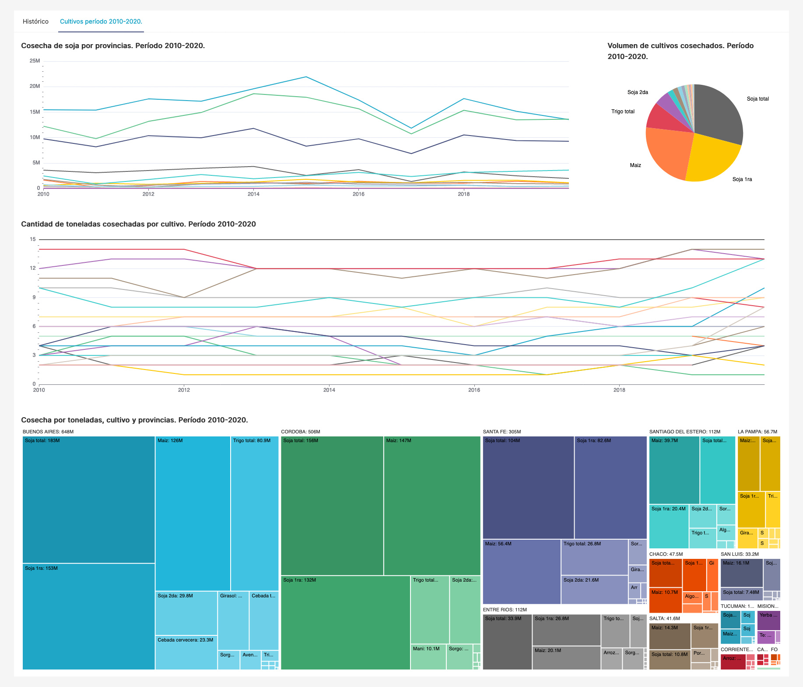
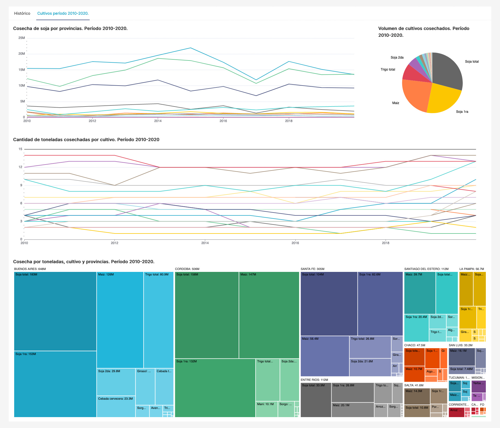

Indicaciones
Al ejecutar el comando './control-env.sh start' en la consola debería de imprimirse el token para Jupyter notebook. Igualmente puede obtenerse a partir del siguiente comando: ./'control-env.sh token'
Pasos a llevar adelante:
- Correr script (01-argentinaDatosWrite) en jupyter notebook para ETL
- Correr script (02-argentinaDatosAdd) en jupyter notebook para generar las tablas secundarias.
- Correr el comando './control-env.sh superset-init' para inicializar los dashboards.
- Una vez ejecutados los procesos a través de los notebooks e inicializado superset ingresar a Superset para las visualizaciones con el user y password ingresado previamente con el comando 'superset-init'. En caso de necesitar re-conectar la base de datos para las visualizaciones obtener la ip de la misma a través del siguiente comando './control-env.sh superset-ip'.
- Ingresar al DASHBOARD.
Funciones disponibles
- './control-env.sh start'
- './control-env.sh stop'
- './control-env.sh token'
- './control-env.sh superset-init'
- './control-env.sh superset-ip'
- './control-env.sh cleanup'
Nota
Siendo las 22:23 del 30/11 tengo algunas dudas respecto de la persistencia de datos de superset, en caso de que todo falle dejo algunas capturas de pantalla de los dashboards citando un tanto penoso 'it worked on my machine' 
